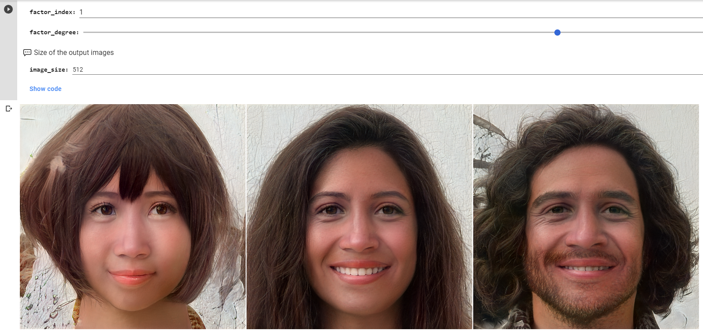

This week, we switched back over to a much more tech-based focus with an introduction to artificial intelligence with the help of Taller Estampa. I really like the name of the module as extended intelligences rather than artificial intelligence. The word artificial, to me, has a negative connotation which seems unnatural and disconnected from the world. However, by calling it extended intelligences, it becomes an extension of our minds and intelligence as humans, taking it a step further but not breaking that connection or creating an association that is not based on our own intelligence. Before this week, I didn’t know too much about exactly how artificial intelligence worked, but I did already have fairly strong opinions about it. I did somewhat agree more with the “artificial” concept of it than “extended”. I think that has changed a bit now that I understand more about how it actually works and how the neural networks and programming are formed. It seems more human knowing that people are the ones actually setting up the AI systems, and it would not work without given inputs. It is almost a bit magical though how AI seemingly does have a brain of its own at some point, and I kind of like that. It reminds me of everything else in nature humans seem to or want to have control over, yet changes and develops on its own anyways. I do see how there is a space for AI, and know that that space will grow in time. Already, we live with artificial intelligence in our phones, Amazon Alexas, chat bots just to name a few. I think the biggest challenge with AI is not trusting the machines themselves, but the people making the decisions that they will be acting off of. As there is hurtful bias in people, there will ultimately be the same reflected in the artificial intelligence systems they create. Even if there is no negative intention behind programming in a dataset, things can go very wrong. Just as with any technology, it is a bit scary thinking about how the decisions of so few can affect so many. Despite all this, I believe AI can be very beneficial and an amazing tool that challenges what we think about as our own intelligence.
One thing I appreciated about the instruction this week is that the first day we got a more general overview of the terms to get a better understanding of how deep learning, machine learning, and artificial intelligence are all encapsulated in each other. One key point I learned is that when it comes to the neural net as a tool in machine learning as well as the data sets provided is that there are endless parameters that can be used depending on what the user wants to be identified such as using images, text, sound and the evaluation criteria used. What was also interesting to me was learning about how the training of the network works in generating outputs. While people do decide some parameters and can control the results, we cannot control the way it auto configures which is extremely interesting as it goes back to the point of having initial but not final control. It brings to mind the idea of raising a child; its environment can be completely controlled and will shape how that child exists in the world, but in the end it has a mind of its own and no direct outcome can be predicted.
Each day, we used colab, which is a platform for machine learning computing, to test premade trainings of AI based on images. It was super interesting albeit slightly creepy, how so many images of people could be created from a handful of seed images. The way they could blend into each other while still retaining their integrity was really impressive. It was crazy to think about how these people didn’t really exist, but were created with AI. I had a lot of fun with my classmates modifying seeds and changing the factor degree and truncation psi a lot so that images would become more and more strange. We generated images in the latent space, first by finding a version of ourselves. Though my generated AI image did look similar to me, it looked like an older version. I played around with the settings to get 3 images of people based on the generated image of me that looked completely different. It was interesting to see how changing the factors made the image appear more masculine, feminine, or androgynous. We also generated images that appeared more like a painting style, working with different seeds. I like how colab made it so accessible for us to explore some capabilities of AI with image generation. I wish we had more time to understand about how to do a simple training of a neural network, visualizing the input and then seeing how long training would take.
modifying seeds in found directions
finding and modifying myself in the latent space
I also enjoyed the projects taller estampa showed us that people using AI have done. I like that the projects incorporated datasets with art and physical objects. The particular projects that taller estampa did called Entolomogia and Especies Marcianes were hypnotizing to watch, with shapes of butterflies, bugs, and creatures seeming to melt into one another and form something so familiar you swear you’d seen it before, yet many of the creatures don’t exist in reality. They then asked us to create a project of our own, one where we could imagine what AI could do. My group took inspiration from the projects we were shown, trying to incorporate both art and music. The premise for the project was to create a system that could match music and art within parallel time periods, with the ability to predict sounds and images in art for the future. Although the project was speculative, it allowed us to be imaginative and see what types of things can be done using artificial intelligence, whether it be to make life easier for people in some way, to derive information, or simply for fun and interest. It also pushed the group to think about HOW these datasets might be used in order to train the neural network. The data set would have to be so large and include so many parameters that I can’t exactly wrap my head around it, but I was able to get a sense of how it could be done. I like how the project, if it were to be developed in real life, would include both auditory and visual aspects while producing a speculative guess of what that might be in the future based on patterns in the current and past.